Introduction#
Probability is the study of the properties of random events.
Preliminaries#
- Compound Union
A symbol that represents the union of a sequence of sets.
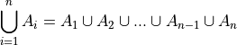
- Summation
A symbol that represents the sum of the elements ix
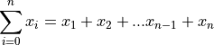
Definitions#
- Experiment
An uncertain event.
- Mutual Exclusivity
- 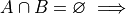 A and B are mutually exclusive.
Two sets, A and B, are mutually exclusive if they are disjoint.
- Outcomes
 (lower case letters)
(lower case letters)A possible way an experiment might occur.
- Sample Space

The set of all possible outcomes for an experiment.
- Events
 (upper-case letters)
(upper-case letters) (upper-case letters with subscripts)
(upper-case letters with subscripts)A subset of the sample space, i.e. a set of outcomes.
 A is an event
A is an event- Probability

A numerical measure of the likelihood, or chance, that event A occurs.
Sample Spaces and Events#
The sample space for an experiment is the set of everything that could possibly happen.
Motivation#
Note
By “fair”, we mean the probability of either outcome, heads or tails, is equally likely.
Consider flipping a fair, two-sided coin. The only possible outcomes to this experiment are heads or tails. If we let h represent the outcome of a head for a single flip and t represent the outcome of a tail for a single flip, then the sample space is given by the set S,
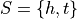
Events can be defined as subsets of the sample space. If we let H represent the event of a head and if we let T represent the event of a tail, then clearly,

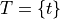
Be careful not to confuse the outcome h with the event H, and likewise the outcome t with the event T. They have different, but related, meanings. The outcomes h and t are individual observables; they are physically measured by flipping a coin and observing on which side it lands. An event, on the other hand, is a set, and sets are abstract collections of individual. In this case, the sets are singletons, i.e. the sets H and T only contain one element each, which can lead to confusion. Let us extend this example further, to put a finer point on this subtlety.
Consider now flipping the same fair, two-sided coin twice. A tree diagram can help visualize the sample space for this experiment,

The outcomes of the sample space are found by tracing each possible path of the tree diagram and then collecting them into a set,

In this example, there is no simple correspondence between the events defined on the sample space and the outcomes within those events, as in the previous example. Take note, the sequence of outcomes ht is different than the sequence of outcomes th. In the first case, we get a head and then we get a tail. In the second case, we get a head and then we get a tail. Therefore, ht and th represent two different outcomes that correspond to the same event. Let us call that event the set HT. HT represents event of getting one head and one tail, regardless of order. Then, HT has exactly two outcomes (elements), for the reasons just discussed,

Classical Definition of Probability#
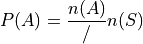
Axioms of Probability#
- Axiom 1: 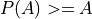
All probabilities are positive; No probabilities are negative.
- Axiom 2:

The probability of some outcome from the sample space S occuring is equal to 1.
- Axiom 3: 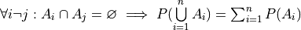
If each event i A in the sample space S is mutually exclusive with every other event 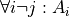, then the probability of the union of all of these events is equal to the sum of the probabilities of each individual event.
Corollaries#
The Law of Complements 
Example
Warning
Proof
By Complement Theorem 12 (Put Link), the union of complements is the sample space S. Therefore, the probability of the union is equal to the probability of the entire sample space S.
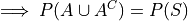

By Axiom 2, the probability of the entire sample space S is 1.
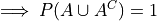
By Complement Theorem 13 (Put Link), the intersection of complements is the empty set.